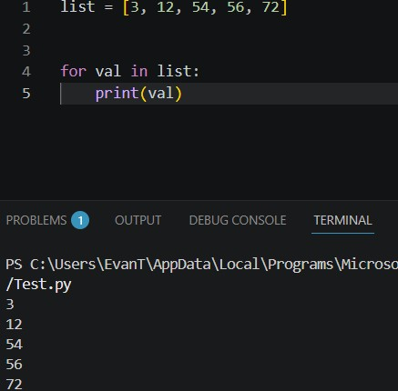
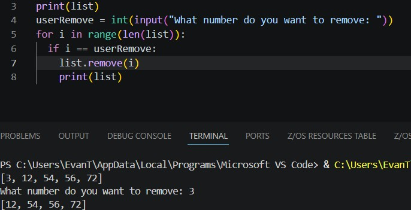

You have now made a list of your favorite numbers but what now?
Over time your list of favorite numbers might change, so how will we change the list to show that?
The simple answer is making a loop. Loops can be used to edit, identify and do many other things with lists. you can use it to print a list.

You have now made a list of your favorite numbers but what now?
Not only that, it can remove a specific item in the list.

loops are super useful when lists are considered.
They give you the ability to augment the list in whatever why you need. Because if that, loops are almost always used with loops.
{% include 'partials/article_navigation.html' %} {% endblock %}